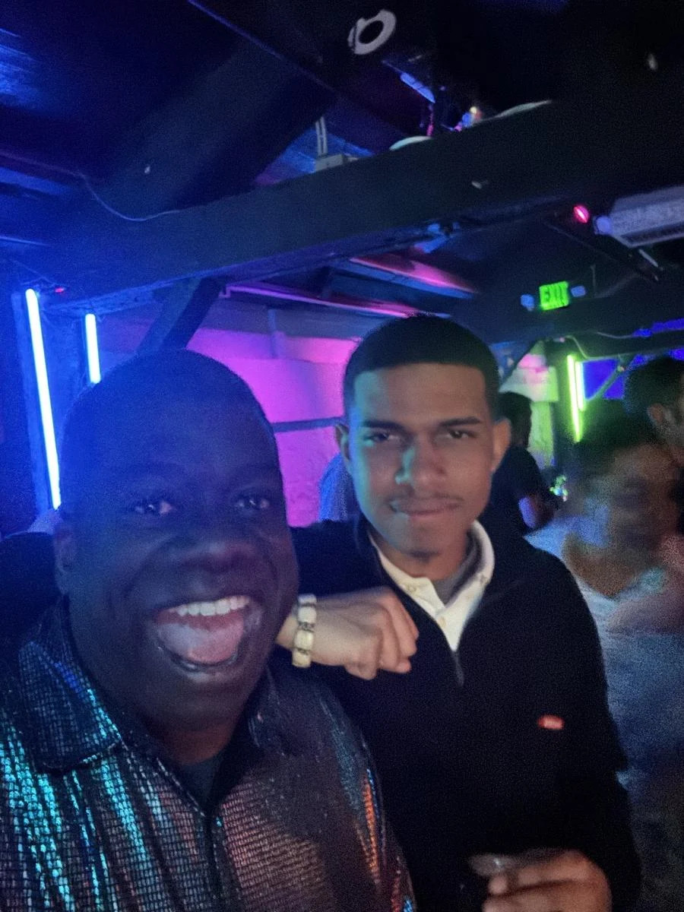

MUSIC · TUE MAR 02 · 2027 · San Francisco
GGP · THE MIXER
Our people. Behind the decks.
160days out
- When
- Tue Mar 2, 2027
- Where
- The Foundry SF · 1425 Folsom Street at 10th, San Francisco · Directions
- Light
- After dark
In the mix
Tuesday night at The Foundry SF: the 21st Annual GGP @ GDC Mixer, with the debut of Fang Speare B2B Capnsmak. Foster Birch and Sam Kennedy, sharing the booth. Dave Vermillion and Trent are on the list. Event hours will follow.
Notes to the crew
Before this night
3 real photographs from Gordon's album that lead here.


Dig into the sound and story
2 short chapters. Open the ones that call to you.
THE DEBUTFang Speare B2B Capnsmak.
Foster Birch and Sam Kennedy. Each has a sound and a story of his own. Their first B2B belongs on the marquee, and their profiles below go all the way back through the music, the making, and the lives around it.
THE ROOMSince 2006, making a place for us.
GGP began with Brian Rubin-Sowers and me in 2006. The annual mixer is one of the ways a community becomes a room full of people. March 2, 2027 brings us to The Foundry SF, one night after Zero Proof. The same address, another way to find each other. Event hours will follow.
Before we go
Artist recordings open on their own players. Not a promised setlist.
Same crew, other nights
Swipe the picture, or use the arrow keys, for the next night.